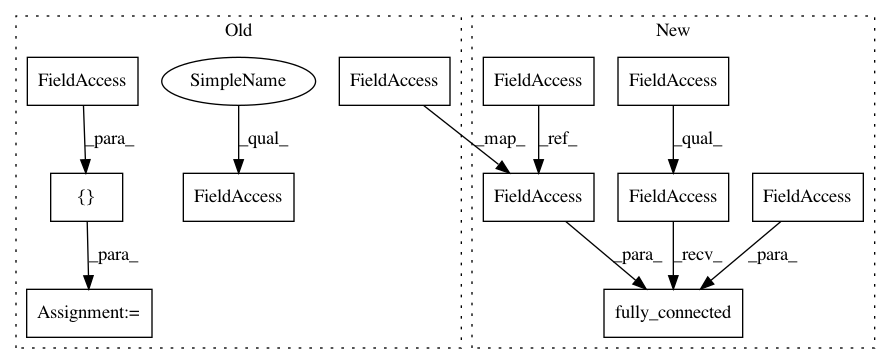

0a1844fe38592ba9797e37c920d6a9f745f217c0,async_knowledge_transfer.py,AsyncKnowledgeTransferLearner,build_networks,#AsyncKnowledgeTransferLearner#,197
Before Change
self.action_taken = tf.placeholder(tf.float32, name="action_taken")
self.advantage = tf.placeholder(tf.float32, name="advantage")
W0 = tf.Variable(tf.random_normal([self.nO, self.config["n_hidden_units"]]) / np.sqrt(self.nO), name="W0")
b0 = tf.Variable(tf.zeros([self.config["n_hidden_units"]]), name="b0")
self.L1 = tf.tanh(tf.nn.xw_plus_b(self.states, W0, b0), name="L1")
self.knowledge_base = tf.Variable(tf.random_normal([self.config["n_hidden_units"], self.config["n_sparse_units"]]))
self.shared_vars = [W0, b0, self.knowledge_base]
self.optimizer = tf.train.RMSPropOptimizer(learning_rate=self.config["learning_rate"], decay=self.config["decay"], epsilon=self.config["epsilon"])
def signal_handler(self, signal, frame):
After Change
def build_networks(self):
with tf.variable_scope("shared"):
self.states = tf.placeholder(tf.float32, [None, self.nO], name="states")
self.action_taken = tf.placeholder(tf.float32, name="action_taken")
self.advantage = tf.placeholder(tf.float32, name="advantage")
self.L1 = tf.contrib.layers.fully_connected(
inputs=self.states,
num_outputs=self.config["n_hidden_units"],
activation_fn=tf.tanh,
weights_initializer=tf.random_normal_initializer(),
biases_initializer=tf.zeros_initializer(),
scope="L1")
self.knowledge_base = tf.Variable(tf.random_normal([self.config["n_hidden_units"], self.config["n_sparse_units"]]), name="knowledge_base")
self.shared_vars = tf.get_collection(tf.GraphKeys.TRAINABLE_VARIABLES, scope="shared")
In pattern: SUPERPATTERN
Frequency: 3
Non-data size: 11
Instances
Project Name: arnomoonens/yarll
Commit Name: 0a1844fe38592ba9797e37c920d6a9f745f217c0
Time: 2017-03-30
Author: x-006@hotmail.com
File Name: async_knowledge_transfer.py
Class Name: AsyncKnowledgeTransferLearner
Method Name: build_networks
Project Name: MorvanZhou/tutorials
Commit Name: d337d8bf8a2d56f629a7da54e2f3b947a1abf503
Time: 2017-02-21
Author: morvanzhou@hotmail.com
File Name: Reinforcement_learning_TUT/7_Policy_gradient_softmax/RL_brain.py
Class Name: PolicyGradient
Method Name: _build_net
Project Name: arnomoonens/yarll
Commit Name: 7041289333eb7865e7c0494592c0c02afb53e7d2
Time: 2017-03-27
Author: x-006@hotmail.com
File Name: REINFORCE.py
Class Name: REINFORCELearnerDiscrete
Method Name: build_network_rnn
Project Name: arnomoonens/yarll
Commit Name: 0a1844fe38592ba9797e37c920d6a9f745f217c0
Time: 2017-03-30
Author: x-006@hotmail.com
File Name: async_knowledge_transfer.py
Class Name: AsyncKnowledgeTransferLearner
Method Name: build_networks